Log this Place
A mobile app where people log and review how accessible places are in Malmö, giving the city an up-to-date picture built by its own citizens.
Malmö’s accessibility information was out of date, so people with disabilities couldn’t trust it to plan their day.
Led design end to end: research, workshops, prototyping, testing, handoff and measuring after launch.
A community-driven app on iOS and Android, backed by the City of Malmö, with usage tracked in Firebase and Data Studio.
A city map that no longer matched the city
The City of Malmö had no up-to-date database of which places are accessible for people with different disabilities, especially mobility impairments. Its public Accessibility Guide existed, but Malmö had changed so fast over ten years that the information was no longer accurate.
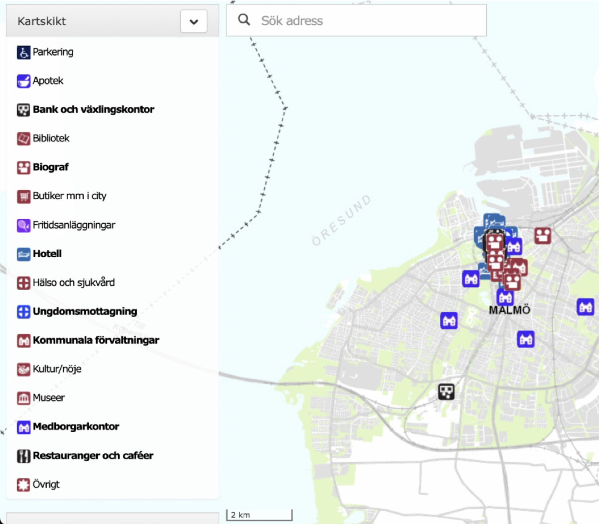
Build a service that increases trust between citizens and the public sector, using digital technology for a new generation of citizen services.
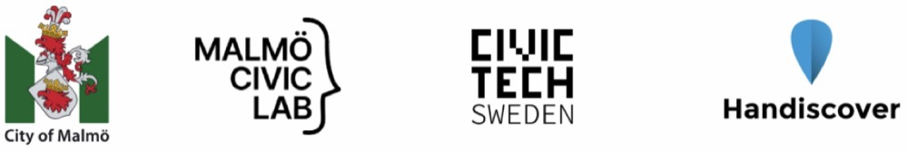
Become the #1 source of accessibility data
A strategic provider of accessibility data.
Find product-market fit in government
Gain trust and learn how municipalities work inside.
Grow brand awareness
A crafted, intuitive experience for users with disabilities.
Lead UX/UI Designer, working as one team
I was in charge of the whole product creation process and guided the team through research, prototyping, visual design, testing, analysis and marketing strategy.
- UX Research
- Tirsa Rosa Ramos-Pedersen, Elizabeth Matkiewicz, Yesol Kim
- Product
- Sebastian Mutsson, Måns Adler
- Accessibility consultants
- Magnus Berglund, Rasmus Isaksson
- Development
- Fabien Coronis, Aleksey Nesterchuk
- 01
Discover
User research, surveys and interviews, benchmarking
- 02
Define
Assessment criteria, journey mapping, key focus areas
- 03
Develop
Personas and scenarios, prototype, usability testing
- 04
Deliver
Final design, handoff and UI guidelines, measure
Four things we learned in the field
Field research with wheelchair users across Malmö, led by UX researchers Tirsa Rosa Ramos-Pedersen and Elizabeth Matkiewicz. We also benchmarked Wheelmap, AXS Map, AccessNow and iaccess Life.
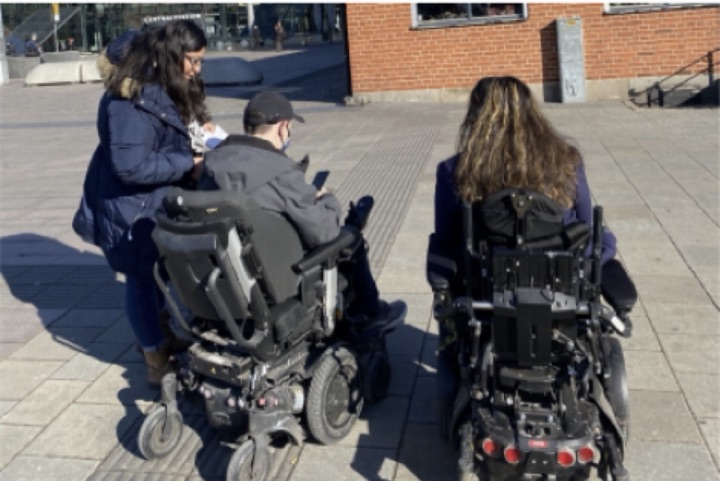
What’s written rarely matches reality
Accessibility shapes how people move and plan.
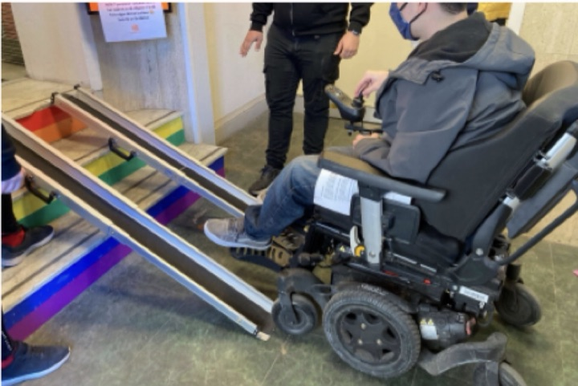
No one solution fits all
Different wheelchairs, different requirements.
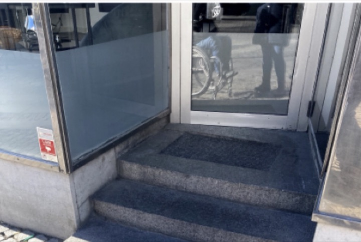
Business owners need to be on board
They should consider all customers’ needs.
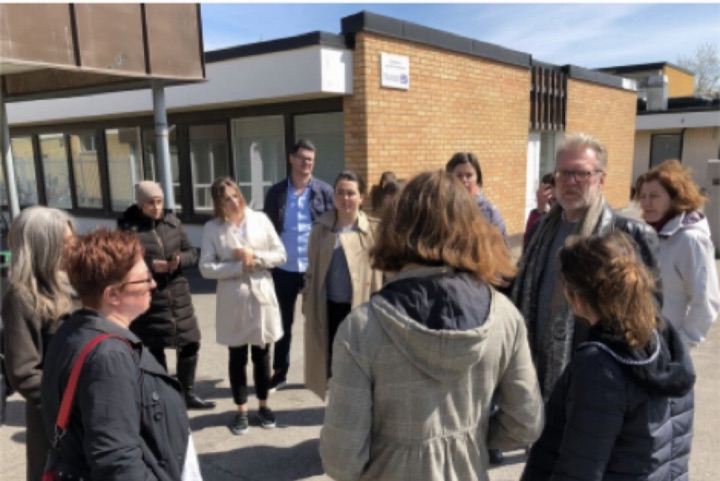
The community creates the data
The municipality adds a layer of trust.
From scenarios to root causes
A workshop to understand potential users and what would motivate them to log data. Participants worked through scenarios and personas, brainstormed motivations, and dug into the root causes found in research.
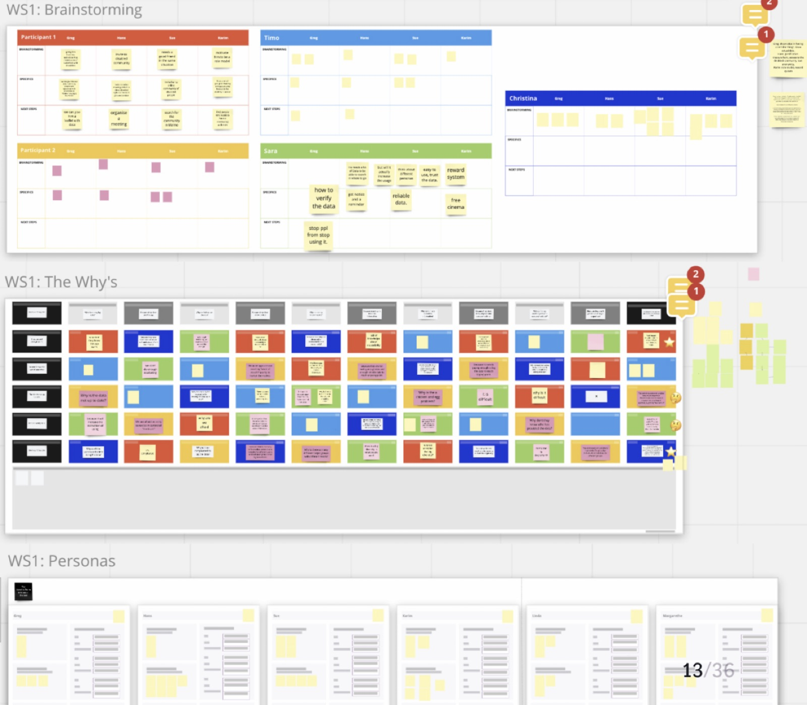
Journeys, a first prototype and real feedback
We mapped journeys for a manual and an automatic wheelchair user, with and without the app, then tested a prototype with four clear states: fully accessible, partially accessible, not accessible and unrated.
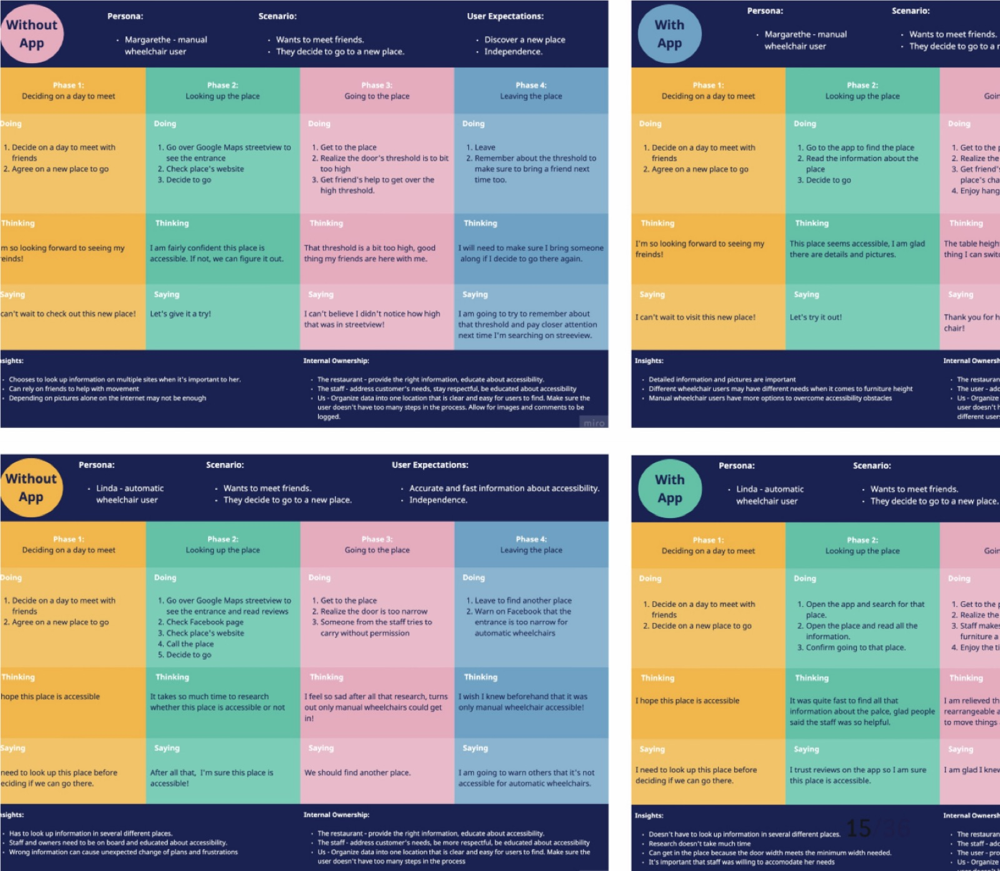
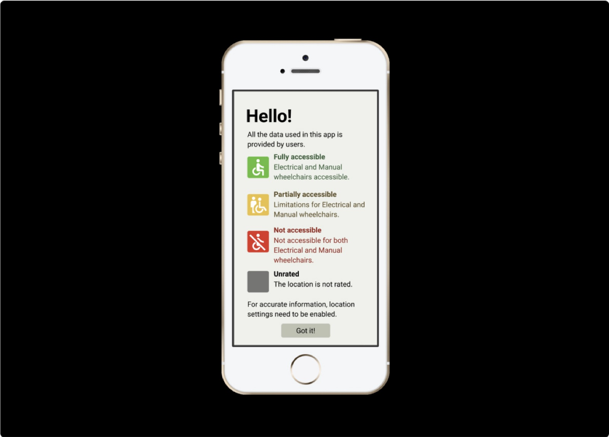
It’s like a contribution. It doesn’t give me money but it gives me a feeling I’m doing something good for society.
It must be able to be used with VoiceOver. Responsive to the font size and so on. Accessible to all users.
Having user-provided data is in one way more reliable than if it’s provided by the restaurant.
If someone puts “partially” everywhere, we don’t know what they mean. Pictures and comments are more relevant.
Map-first, with detail instead of vague labels
A short guided questionnaire covers parking, entrance, inside, toilet and payment, with example photos for every question so anyone can answer.
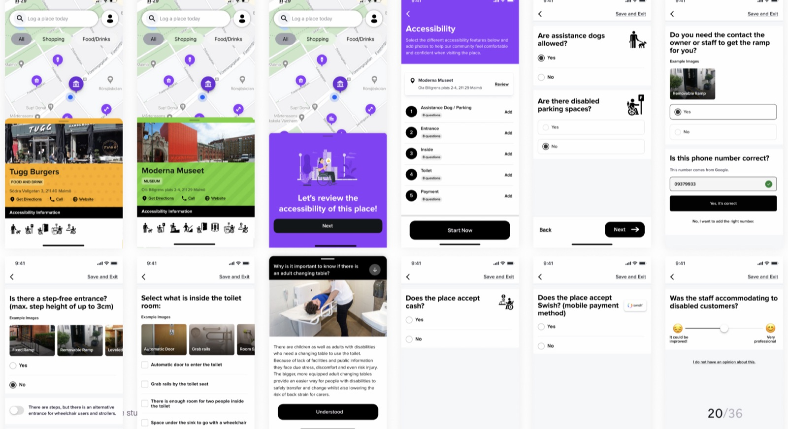
Handoff
Daily standups, weekly demos and remote sessions with the mobile developer to check the build against the design and the usability requirements.
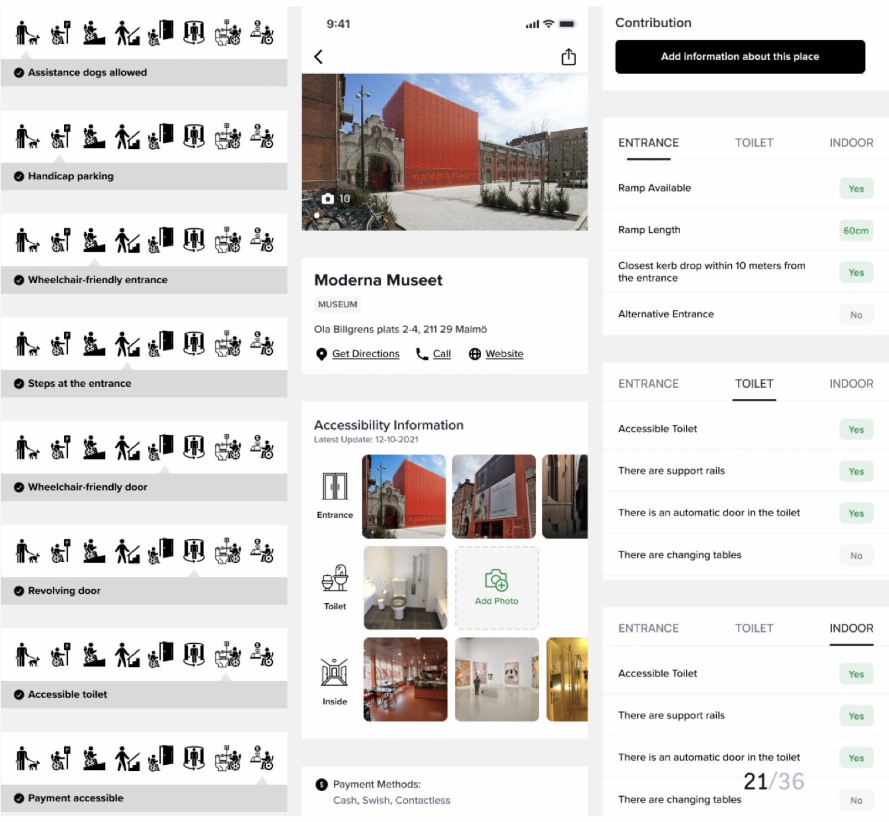
Measure
After launch we tracked two dimensions in Google Firebase and Data Studio.
- Places
- Total points, categories, heatmap
- Audience
- Time on screen, views, devices
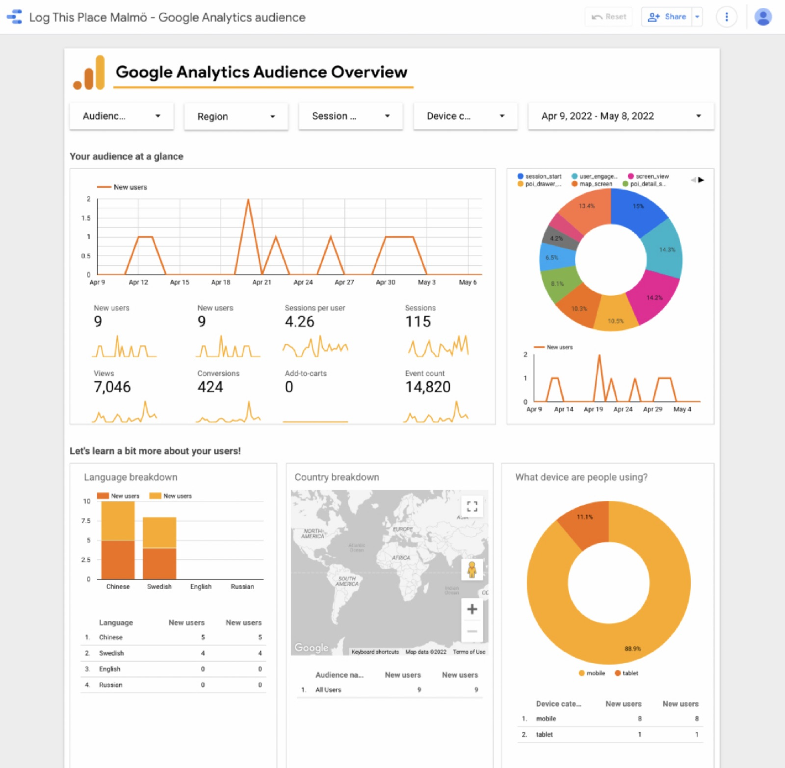
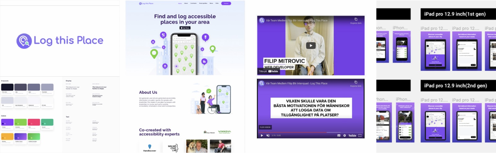
“One size fits all” doesn’t apply to inclusive products.
There are many ways of doing it right if you first identify your challenges, and for that you need efficient, actionable data. Strong, empowered teams bring consistent innovation and real value for customers and the business.
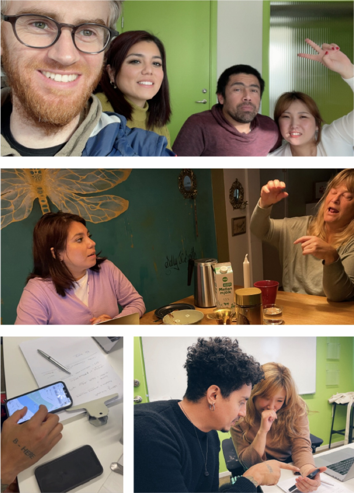